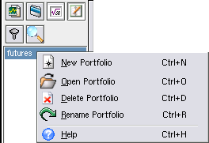
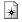
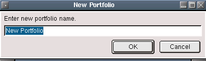
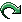
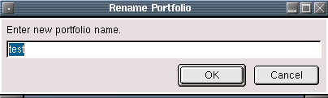

Portfolio Panel
Description:
The portfolio tab allows you to create, edit, rename and delete portfolios.
The context menu functions are as follows:
Open Portfolio
This will load and display the selected portfolio. The portfolio is simply a list of symbols, and the difference between the current value and the purchase price.
 New Portfolio
Here you can create a new portfolio. Selecting this will bring up a series of dialogs. First you are asked for a name to call your new portfolio. The name must be unique, if not an error message will display. After that, the Portfolio dialog will appear where you can enter new portfolio items.
Delete Portfolio
Deletes the selected portfolio.
 Rename Portfolio
This brings up a dialog that allows you to enter the new name of the selected portfolio.
